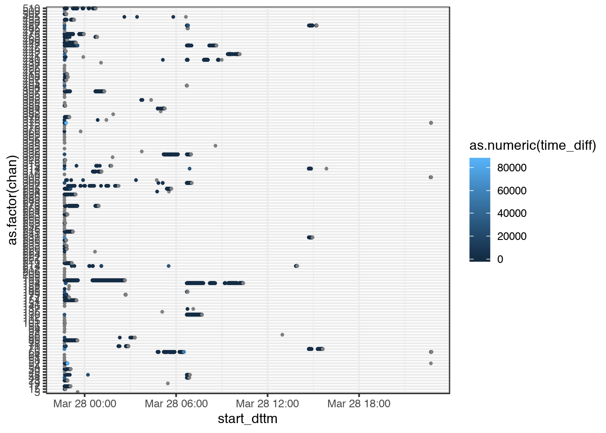
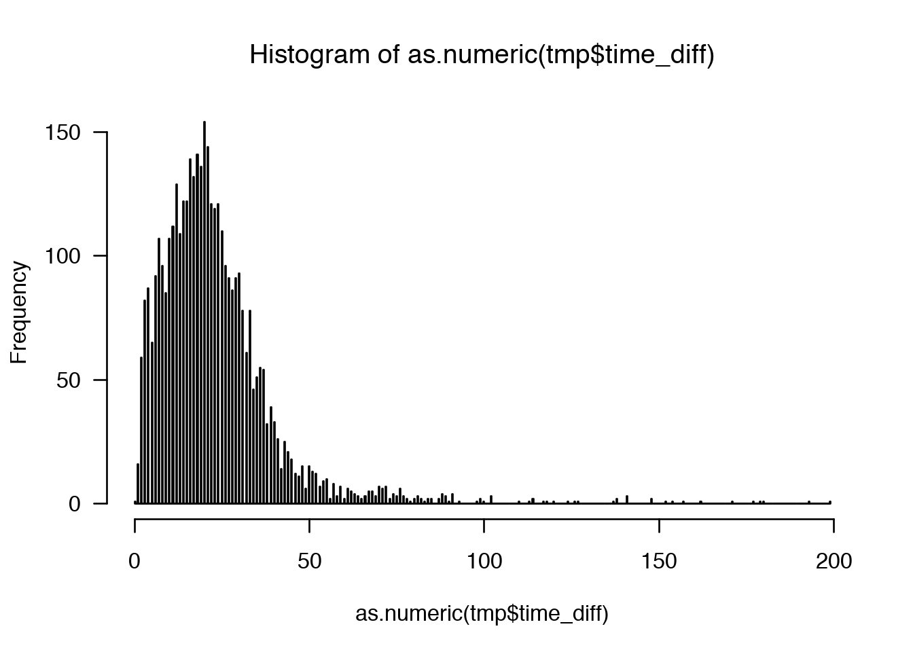

Tidy Work in Tidyverse
Hands-on
Marcin Kierczak
13-Jun-2018

This is the Tidyverse course work material for RaukR 2018.
1 Introduction
Welcome to the hands-on workshop “Tidy Work in Tidyverse”. Most of the things necessary to complete the tutorials and challenges were covered in the lecture. However, sometimes the tasks require that you check the docs or search online. Not all our solutions are optimal. Let us know if you can do better or solve things in a different way. If stuck, look at hints, next google and if still stuck, turn to TA. It is a lot of material, do not fee bad if you do not solve all tasks. If you completed Challenge 3 you are good and have used the most important features of tidyverse! Good luck!
2 General excercises
2.1 Pipes
Rewrite the following code chunks as pipes (magrittr):
2.1.1 Chunk 1
my_cars <- mtcars[, c(1:4, 10)]
my_cars <- my_cars[my_cars$disp > mean(my_cars$disp), ]
my_cars <- colMeans(my_cars)What is wrong with our solution?
2.1.2 Chunk 2
The summary(x) function is a bit special: when you type summary(x) in the console, print is called in an implicite way. Pipe call does not do, so you will have to invoke print in an explicite way. But the %T>% does unbranch for one call only, you will have to make printing of the summary a one single composed call using {}.
summary(cars)
colSums(cars)2.1.3 Chunk 3
Rewrite correlations to pipes.
cor(mtcars$gear, mtcars$mpg)cor(mtcars)2.1.4 Chunk 4
Given is the dim_summary(nrows, ncols) function which takes matrix nrows and ncols as arguments and prints this info about its dimensions:
dim_summary <- function(nrows, ncols) {
print(
paste0('Matrix M has: ', nrows, ' rows and ', ncols, ' columns.')
)
}Rewrite the code chunks below as pipes:
distr1 <- rnorm(16)
M <- matrix(distr1, ncol = 4)
plot(M)
M <- M + sample(M)
dim_summary(nrows = nrow(M), ncols = ncol(M))
distr2 <- rnorm(16)N <- matrix(distr2, ncol = 4)
colnames(N, letters[1:4])
summary(N)P <- M %x% t(N)
heatmap(P)
names(P) <- letters[1:dim(P)[2]]
cor(P[ ,'a'], P[ ,'i'])A class of functions, called the replacement functions are of the form function(arguments)<-value and rownames(x) <- c('a', 'b', 'c') is a good example of a replacement function. When writing pipes, we have bear in mind that whole function<- is the name of the replacement function and thus we have to use it as such in the pipe.
Note. Not always one can put everything into one single pipe, sometimes the results of running two or more pipes have to be used in the final pipe.
dim_summary <- function(nrows, ncols) {
print(paste0('Matrix M has: ', nrows, ' rows and ', ncols, ' columns.'))
}
M <- rnorm(16) %>%
matrix(ncol = 4) %T>%
plot() %>%
`+`(., sample(.)) %T>%
{dim_summary(nrow(.), ncol(.))}
N <- rnorm(16) %>%
matrix(ncol = 4) %>%
`colnames<-`(letters[1:4]) %>%
t()
P <- M %>%
`%x%`(., N) %T>%
heatmap() %>%
`colnames<-`(letters[1:dim(.)[2]]) %>%
as_data_frame() %$%
cor(a, i)2.2 Tibbles
2.2.1 Task 1
- Convert the
mtcarsdataset to a tibblevehicles. - Select the number of cylinders (
cyl) variable using:- the
[[index]]accessor, - the
[[string]]accessor, - the
$accessor.
- the
- Do the same selection as above, but using pipe and placeholders (use all thre ways of accessing a variable).
- Print the tibble.
- Print the 30 first rows of the tibble.
- Change the default behaviour of printing a tibble so that at least 15 and at most 30 rows are printed.
- What is the difference between the
tibble.print_maxanddplyr.print_min? Is there any? Test it. - Convert
vehiclesback to adata.framecalledautomobiles.
# 1
vehicles <- mtcars %>% as_tibble()
# 2
vehicles[['cyl']]
vehicles[[2]]
vehicles$cyl
# 3
# Here we used pipe, you do not have to...
vehicles %T>%
{print(.[['cyl']])} %T>%
{print(.[[2]])} %>%
.$cyl
# 4
vehicles
# 5
vehicles %>% head(n = 30)
# 6
options(tibble.print_min = 15, tibble.print_max = 30)
# 7
# In theory there should be no difference. dplyr imports tibble from the tibble package
# and dplyr.width, dplyr.print_min and dplyr.print_min are passed down to the tibble.
# But test both behaviours. First with only the tibble package loaded, later with dplyr # loaded.
# 8
automobiles <- as.data.frame(vehicles)2.2.2 Task 2
Create the following tibble using tribble():
| id | event | date |
|---|---|---|
| 1 | success | 24-04-2017 |
| 2 | failed | 25-04-2017 |
| 3 | failed | 25-04-2017 |
| 4 | success | 27-04-2017 |
2.2.3 Task 3
Compare the performance of as.data.frame(), as_data_frame() and as_tibble() on a
100 x 30 matrix filled with random integers. Use package microbenchmark. Fill in your result here in the Tidyverse Lab sheet, Tibbles – performance.
2.2.4 Task 4
Do you think tibbles are lazy? Try to create a tibble that tests whether lazy evaluation applies to tibbles too.
2.3 Parsing
Parse the following vectors:
vec1 <- c(1, 7.2, 3.84, -5.23)– parse it as double.- now parse the same vector
c(1, 7.2, 3.84, -5.23)as integer. What happens? - Can you still parse it as integer somehow?
- Parse as double
vec2 <- c('2', '3,45', '?', '-7,28') - Parse correctly
vec3 <- c('2', '3,45', '?', '-7.28') - Parse the following guessing the parser:
vec4 <- c('barrel: 432.7$', 'liter: 15.42PLN', 'gallon costs approx 32.1SEK', 'sunny, wind gusts up till 55m/s') - Can you parse
vec4as number? Do it if you can. - Parse
vec5 <- "25 Dec 2015"as date (hint:?parse_date()). - Parse
10_Jul_1410as date.
vec1 <- c(1, 7.2, 3.84, -5.23)
vec2 <- c('2', '3,45', '?', '-7,28')
vec3 <- c('2', '3,45', '?', '-7.28')
vec4 <- c('barrel: 432.7$', 'liter: 15.42PLN', 'gallon costs approx 32.1SEK', 'sunny, wind gusts up till 55m/s')
vec5 <- "25 Dec 2015"
parse_double(vec1)
parse_integer(vec1)
parse_integer(as.integer(vec1)) # Is it the best way? Hint: rounding.
parse_double(vec2, na = '?', locale = locale(decimal_mark = ','))
parse_number(vec2, na = '?', locale = locale(decimal_mark = ','))
guess_parser(vec4)
parse_guess(vec4)
# Yes, you can:
parse_number(vec4)
parse_date(vec5, format="%d %b %Y")
parse_date("10_Jul_1410", format="%d%.%b%.%Y")3 NYC flights Challenge
The nycflights13 package contains information about all flights that departed from NYC (i.e., EWR, JFK and LGA) in 2013: 336,776 flights with 16 variables. To help understand what causes delays, it also includes a number of other useful datasets: weather, planes, airports, airlines. We will use it to train working with tibbles and dplyr.
3.1 Task 1 – selecting column
- load the
nycflights13package (install if necessary), - read about the data in the package docs,
- inspect the
flightstibble. - select all columns but
carrierandarr_time, - select
carrier,tailnumandorigin, - hide columns from
daythroughcarrier, - select all columns that have to do with
arrival (hint:?tidyselect), - select columns based on a vector
v <- c("arr_time", "sched_arr_time", "arr_delay"), - rename column
desttodestinationusing:select()andrename()
What is the difference between the two approaches?
install.packages('nycflights13')
library('nycflights13')
?nycflights13
flights
flights %>% select(-carrier, -arr_time)
flights %>% select(carrier, tailnum, origin)
flights %>% select(-(day:carrier))
flights %>% select(contains('arr_')) # or
v <- c("arr_time", "sched_arr_time", "arr_delay")
flights %>% select(v) # or
flights %>% select(one_of(v))
flights %>% select(destination = dest)
flights %>% rename(destination = dest)
# select keeps only the renamed column while rename returns the whole dataset
# with the column renamed3.2 Task 2 – filtering rows
- filter only the flights that arrived ahead of schedule,
- filter the flights that had departure delay between 10 and 33,
- fish out all flights with unknown arrival time,
- retrieve rows 1234:1258 (hint:
?slice), - sample (
?sample_n()) 3 random flights per day in March, - show 5 most departure-delayed flights in January per carrier,
- retrieve all
unique()routes and sort them by origin, - retrieve all
distinct()routes and sort them by origin, - is
unique()more efficient thandistinct()?
flights %>% filter(arr_delay < 0)
flights %>% filter(dep_delay >= 10, dep_delay <= 33) # or
flights %>% filter(between(dep_delay, 10, 33))
flights %>% filter(is.na(arr_time))
flights %>% slice(1234:1258)
flights %>% filter(month == 3) %>%
group_by(day) %>%
sample_n(3)
flights %>%
filter(month == 1) %>%
group_by(carrier) %>%
top_n(5, dep_delay)3.3 Task 3 – Trans(mutations)
air_timeis the amount of time in minutes spent in the air. Add a new columnair_spdthat will contain aircraft’s airspeed in mph,as above, but keep only the new
air_spdvariable,use
rownames_to_column()onmtcarsto add car model as an extra column,
3.4 Task 4 – groups and counts
- use
group_by(),summarise()andn()to see how many planes were delayed (departure) every month,
- do the same but using
tally()andcount(),
flights %>%
filter(dep_delay > 0) %>%
group_by(month) %>%
tally()
flights %>%
filter(dep_delay > 0) %>%
count(month)- what was the mean
dep_delayper month?
- count the number of incoming delayed flights from each unique origin and sort origins by this count (descending),
flights %>%
filter(arr_delay > 0) %>%
group_by(origin) %>%
summarise(cnt = n()) %>%
arrange(desc(cnt))- do the same using
tally()
- use
summarise()to sum totaldep_delayper month in hours,
- use the
wtparameter ofcount()(works withtally()too) to achieve the same,
- run
group_size()oncarrierwhat does it return?
- use
n_groups()to check the number of unique origin-carrier pairs,
Note on ungroup Depending on the version of dplyr you may or may need to use the ungroup() if you want to group your data on some other variables:
flights %>%
group_by(origin) %>%
mutate(mean_delay_orig = (mean(dep_delay, na.rm = T) + mean(arr_delay, na.rm = T)) / 2) %>%
ungroup() %>%
group_by(carrier) %>%
mutate(mean_delay_carr = (mean(dep_delay, na.rm = T) + mean(arr_delay, na.rm = T)) / 2) %>%
select(origin, carrier, mean_delay_orig, mean_delay_carr)may or may need ungroup depending on your dplyr version. In the newer versions, summarise and mutate drop one aggregation level.
3.5 Task 5 – joins
Given the following tibbles:
set1:
| id | color |
|---|---|
| id1 | grey |
| id1 | red |
| id2 | green |
| id3 | blue |
and set2:
| id | size |
|---|---|
| id2 | XL |
| id3 | M |
| id4 | M |
Perform joins on id that result in the grey area from the Venn diagrams below:
4 Tidying data
Now time to do some data tidying. First install a package with some untidy data:
devtools::install_github("rstudio/EDAWR")
library(EDAWR)- tidy
casesso that years are not in separate columns, but in the column calledyearcontaining a value per each year.
- now time for the
pollutiondataset. Tidy it so that there separate columns forlargeandsmallpollution values.
- the
stormsdataset contains thedatecolumn. Make it into 3 columns:year,monthandday. Store the result astidy_storms
- now, merge
year,monthanddayintidy_stormsinto adatecolumn again but in the “DD/MM/YYYY” format.
5 Nanopore Channel Activity Challenge
5.1 Introduction
You will be given a fastq file coming from MinION sequencer (Oxford Nanopore). This file contains test reads from the chicken genome. The flow-cell used here has 512 channels, each channel consists of 4 pores and only one pore is active at a time. Once your sequence gets stuck for some reason, the device will attempt to remove it from the pore by playing with reversing polarity on that pore. If this was successful, the pore will be re-used. Your task will be to visualise reading events from the meta-data in the fastq dataset and to see how each and every channel behaved. Also, you will plot the distribution of reading times.
5.2 Preparations
First, we will need to load the necessary libraries. I will give you a hint – you need the following libraries:
here– not necessary, but it is an elegant way of reading the data locally from the project folder,tidyverse– well, quite obvious why,ShortReadfrom Bioconductor – to deal with short reads infastq,lubridate– to figure out reading times.
5.3 Reading data
Now, let’s read the fastq data. Check ShortRead documentation to see how to read our fastq file. Also, try to use package here. If you write: data <- here::here('data/my.fastq'), the my.fastq file will be read from the data folder which is a subfolder of your project root, i.e. the folder where your r script is. It is a good practise and also prevents Jenny Brian from coming to your office and setting your computer on fire.
Now think a bit, to plot reading events, do we need al the data in the file or only some specific part? You may want to see some few first lines of the fastq to learn about the data structure.
5.4 Extracting information you need
In this step, we are extracting data from fastq headers of each and every read in the fastq file. Not super efficient and perhaps the slowest step of the whole analyses. Can you do it better than our example solution?
Desired output: a table (tibble/data.frame) with reads as rows and meta-data as columns.
Hint: use strsplit() to explode string data into columns and str_remove_all() to get rid of unwanted characters. Since we did not talk much about regular expressions and the stringr package:
- To split string on a particular character, group of characters use
strsplit. Here we split on comma.
text <- "This text is long, or not?"
strsplit(text, ',')- To remove everything following a given character, e.g. comma:
str_remove_all(text, ",.*")data <- dplyr::as_tibble(matrix(NA_character_, ncol = 6, nrow = length(headers)))
colnames(data) <- c('id', 'run_id', 'sample_id', 'read', 'channel', 'start_time')
for (i in 1:length(headers)) {
tmp <- toString(headers[[i]])
tmp_flat <- unlist(strsplit(tmp, ' ')) %>%
str_remove_all(".*=")
data[i,] <- tmp_flat
}5.5 Preparing tidy dataset
Now, the fun part begins:
- add column
start_dttmthat represents start time for a given read as properdatetimeobject (readlubridatedocs) and - add column
chanthat is the proper numeric representation of the channel, - group reads by channel,
- arrange them by time,
- add time to next read (NA if this was the last read) and
- sort by channel again.
Hint: read about lead()
5.6 Plotting events per channel
Important! If you are not familiar with ggplot either:
- wait until tomorrow,
- use base-R plotting, or
- see our
ggplot2solution.
Here, we want to see what was happening in each channel over time. Plot the data you have just prepared so that:
- each point is the start of a new read,
- colour corresponds to the lag to the next read.
Can you visualise this in a better way? Different geometry?
ggplot(data2, mapping = aes(x = start_dttm,
y = as.factor(chan),
col = as.numeric(time_diff)
)
) +
geom_point(size = .5) +
theme_bw()
5.7 Distribution of time intervals
Now, we want to see how time-to-next-read is distributed. Since it has a veeeeery long right tail, I am cutting off everything above 200 seconds (just by eyeballing).
- plot time-to-next-read is distribution (you can use base-R
histogram), - can you find a better cutoff value?
# Show time-to-next read distribution
# thr <- mean(data2$time_diff, na.rm = T) + 3 * sd(data2$time_diff, na.rm = T)
tmp <- data2 %>%
ungroup() %>%
filter(time_diff < 200) %>%
select(time_diff)
hist(as.numeric(tmp$time_diff), breaks = 1000, las=1)
6 Species Identification Challenge
In this challenge, your task will be to analyse species composition of some samples. The samples, were actual products containing parts of plants. DNA has been isolated form the samples and an amplicon metabarcoding was performed using two sets of primers: for the ITS1 and the ITS2 region. Each sample had 3 technical replicates. Your task will be to transform BLAST output to a tidy form suitable for further analyses or visualisation.
6.1 Load necessary libraries
We will obviously need tidyverse, we will also do some string manipulations with stringr also here package is good to have.
6.2 Input variables
Here, we will define our input variables. We need:
filethat contains the path to the dataset,sample_nameis a string, the name of the sample you want to analyse,thresholdis an intiger saying what is a the minimal number of replicates that have to contain an OTU in order to call it a true positive (TP),stricta logical. If set to TRUE, only the OTUs deemed TP will be shown.
Below we set some examle values:
# Change the path to your project path, where your data is
file <- here::here("docs/tidyverse_Marcin/lab/lab_assets/blast_result.csv")
sample_name <- 'SAMPLE12'
threshold <- 1
strict <- F6.3 Reading the data
Now, you should read the data:
| sample | its | replicate | OTU | size | hit | perc_ident | family | species |
|---|---|---|---|---|---|---|---|---|
| SAMPLE10 | ITS1 | R1 | OTU1 | 372 | KX522674 | 97.08 | Anacardiaceae | Spondias_tuberosa |
| SAMPLE10 | ITS1 | R1 | OTU1 | 372 | AJ783644 | 97.53 | Betulaceae | Betula_populifolia |
| SAMPLE10 | ITS1 | R1 | OTU1 | 372 | AJ783641 | 97.53 | Betulaceae | Betula_alnoides |
| SAMPLE10 | ITS1 | R1 | OTU1 | 372 | MF171078 | 98.71 | Pentaphylacaceae | Pentaphylax_euryoides |
| SAMPLE10 | ITS1 | R1 | OTU2 | 14 | KY214931 | 98.33 | Musaceae | Musa_ornata |
| SAMPLE10 | ITS1 | R1 | OTU2 | 14 | KY214926 | 96.23 | Musaceae | Musa_sp. |
| SAMPLE10 | ITS1 | R1 | OTU2 | 14 | KY214930 | 95.73 | Musaceae | Musa_basjoo |
| SAMPLE10 | ITS1 | R1 | OTU2 | 14 | KY214927 | 97.67 | Musaceae | Musella_lasiocarpa |
| SAMPLE10 | ITS1 | R2 | OTU1 | 357 | AM233397 | 95.62 | Apocynaceae | Secamone_filiformis |
| SAMPLE10 | ITS1 | R2 | OTU1 | 357 | FR832858 | 96.69 | Rubiaceae | Tricalysia_perrieri |
As you see, the following information are included in the data:
sampleis simply the name of the sample,itsis either ITS1 or ITS2 and tells which set of PCR primers has been used,replicatecontains information on which replicate the sequences come from,OTUis a unique identifier of the so-called Operational Taxonomic Unit, an OTU often corresponds to one species but not always. Sometimes 2 OTUs represent the same species, sometimes 1 OTU consists of more than one species,sizeis the number of reads that support that particular OTU,hitis the BLAST hit identifier. The 4 top BLAST hits are reported per OTU,perc_identityis the percentage identity of the sequence to the BLAST hit,familyis the identified plant family,speciesis the identified plant species.
6.4 Number of replicates per species
Create a new dataset species that contains an extra column n_replicates. The column contains number of replicates this particular species is present in. Do it per sample and its.
species <- species_orig %>%
group_by(sample, its, species) %>%
mutate(n_replicates = n_distinct(replicate)) %>%
ungroup()| sample | its | replicate | OTU | size | hit | perc_ident | family | species | n_replicates |
|---|---|---|---|---|---|---|---|---|---|
| SAMPLE10 | ITS1 | R1 | OTU1 | 372 | KX522674 | 97.08 | Anacardiaceae | Spondias_tuberosa | 2 |
| SAMPLE10 | ITS1 | R1 | OTU1 | 372 | AJ783644 | 97.53 | Betulaceae | Betula_populifolia | 1 |
| SAMPLE10 | ITS1 | R1 | OTU1 | 372 | AJ783641 | 97.53 | Betulaceae | Betula_alnoides | 1 |
| SAMPLE10 | ITS1 | R1 | OTU1 | 372 | MF171078 | 98.71 | Pentaphylacaceae | Pentaphylax_euryoides | 1 |
| SAMPLE10 | ITS1 | R1 | OTU2 | 14 | KY214931 | 98.33 | Musaceae | Musa_ornata | 1 |
| SAMPLE10 | ITS1 | R1 | OTU2 | 14 | KY214926 | 96.23 | Musaceae | Musa_sp. | 1 |
| SAMPLE10 | ITS1 | R1 | OTU2 | 14 | KY214930 | 95.73 | Musaceae | Musa_basjoo | 1 |
| SAMPLE10 | ITS1 | R1 | OTU2 | 14 | KY214927 | 97.67 | Musaceae | Musella_lasiocarpa | 1 |
| SAMPLE10 | ITS1 | R2 | OTU1 | 357 | AM233397 | 95.62 | Apocynaceae | Secamone_filiformis | 1 |
| SAMPLE10 | ITS1 | R2 | OTU1 | 357 | FR832858 | 96.69 | Rubiaceae | Tricalysia_perrieri | 1 |
6.5 Filter out unwanted samples
Now, your task is to filter out all but your sample_name samples from the dataset.
Call the resulting dataset my_sample.
6.6 Missing observations
What happens if a set of primers failed to amplify or if one replicate was lost?
Use complete() to make sure you have NA values in such cases.
6.7 Sorting issue
Look, the first sample in the table is SAMPLE10. Why not SAMPLE1?
Thats a sorting issue: if sorted as character, 10 will come before 1. WE have to fix this by adding trailing zero to the values in OTU. We do not expect more than 99 OTUs in a sample, so it is ok with only one trailing 0 (otherwise the 100-th sample will spoil our sorting and come out like: SAMPLE100, SAMPLE01, SAMPLE10). We will need to use regular expression:
- all values in the
OTUcolumn that follow pattern “OTUdigit” we need to change to “OTU0digit”. Regular expression that matches this isOTU([0-9]$)and it should be replaced by:OTU0\\1. Ask your TAs to explain this if you do not know much about regular expressions and pattern matching.
my_sample <- my_sample %>% mutate(OTU = str_replace(OTU,
pattern = "OTU([0-9]$)",
replacement = "OTU0\\1"
)
)| its | replicate | sample | OTU | size | hit | perc_ident | family | species | n_replicates |
|---|---|---|---|---|---|---|---|---|---|
| ITS1 | R1 | SAMPLE12 | OTU01 | 4169 | LC089998 | 99.44 | Brassicaceae | Capsella_bursa-pastoris | 3 |
| ITS1 | R1 | SAMPLE12 | OTU02 | 2686 | KP794392 | 98.19 | Euphorbiaceae | Tragia_cf. | 3 |
| ITS1 | R1 | SAMPLE12 | OTU02 | 2686 | KP794390 | 98.19 | Euphorbiaceae | Tragia_chlorocaulon | 3 |
| ITS1 | R1 | SAMPLE12 | OTU02 | 2686 | KP794378 | 98.19 | Euphorbiaceae | Tragia_bahiensis | 3 |
| ITS1 | R1 | SAMPLE12 | OTU02 | 2686 | KP794320 | 98.19 | Euphorbiaceae | Bia_alienata | 3 |
| ITS1 | R1 | SAMPLE12 | OTU04 | 1353 | GQ396671 | 97.44 | Euphorbiaceae | Triadica_sebifera | 3 |
| ITS1 | R1 | SAMPLE12 | OTU04 | 1353 | KX522674 | 96.25 | Anacardiaceae | Spondias_tuberosa | 3 |
| ITS1 | R1 | SAMPLE12 | OTU04 | 1353 | KY860928 | 96.23 | Adoxaceae | Viburnum_prunifolium | 3 |
| ITS1 | R1 | SAMPLE12 | OTU04 | 1353 | KX757310 | 96.23 | Caryophyllaceae | Silene_caesia | 3 |
| ITS1 | R1 | SAMPLE12 | OTU06 | 577 | KY860926 | 100.00 | Asteraceae | Taraxacum_officinale | 3 |
6.8 Supporting reads
Sometimes, an OTU generates two or more top BLAST hits that come from the same species. We have decided to sum reads in such cases. Do it!
my_sample <- my_sample %>%
ungroup() %>%
group_by(sample, its, replicate, OTU, species, n_replicates) %>%
summarise(n_reads = sum(size)) %>%
ungroup() %>%
group_by(its, species, OTU)| sample | its | replicate | OTU | species | n_replicates | n_reads |
|---|---|---|---|---|---|---|
| SAMPLE12 | ITS1 | R1 | OTU01 | Capsella_bursa-pastoris | 3 | 4169 |
| SAMPLE12 | ITS1 | R1 | OTU02 | Bia_alienata | 3 | 2686 |
| SAMPLE12 | ITS1 | R1 | OTU02 | Tragia_bahiensis | 3 | 2686 |
| SAMPLE12 | ITS1 | R1 | OTU02 | Tragia_cf. | 3 | 2686 |
| SAMPLE12 | ITS1 | R1 | OTU02 | Tragia_chlorocaulon | 3 | 2686 |
| SAMPLE12 | ITS1 | R1 | OTU04 | Silene_caesia | 3 | 1353 |
| SAMPLE12 | ITS1 | R1 | OTU04 | Spondias_tuberosa | 3 | 1353 |
| SAMPLE12 | ITS1 | R1 | OTU04 | Triadica_sebifera | 3 | 1353 |
| SAMPLE12 | ITS1 | R1 | OTU04 | Viburnum_prunifolium | 3 | 1353 |
| SAMPLE12 | ITS1 | R1 | OTU06 | Taraxacum_amplum | 3 | 577 |
6.9 Within-OTU species diversity
Now, we want to see how many identifications an OTU got. Implement this. Store the result in a new tibble diversity.
diversity <- my_sample %>%
ungroup() %>%
group_by(its, replicate, OTU) %>%
summarise(n_species = n())| its | replicate | OTU | n_species |
|---|---|---|---|
| ITS1 | R1 | OTU01 | 1 |
| ITS1 | R1 | OTU02 | 4 |
| ITS1 | R1 | OTU04 | 4 |
| ITS1 | R1 | OTU06 | 4 |
| ITS1 | R1 | OTU07 | 3 |
| ITS1 | R1 | OTU08 | 2 |
| ITS1 | R1 | OTU10 | 1 |
| ITS1 | R1 | OTU11 | 3 |
| ITS1 | R1 | OTU13 | 3 |
| ITS1 | R1 | OTU15 | 2 |
6.10 Adding diversity data
Add the diversity data to my_sample using appropriate join function.
Also, remove the column with sample names since we are dealing with only one sample.
| its | replicate | OTU | species | n_replicates | n_reads | n_species |
|---|---|---|---|---|---|---|
| ITS1 | R1 | OTU01 | Capsella_bursa-pastoris | 3 | 4169 | 1 |
| ITS1 | R1 | OTU02 | Bia_alienata | 3 | 2686 | 4 |
| ITS1 | R1 | OTU02 | Tragia_bahiensis | 3 | 2686 | 4 |
| ITS1 | R1 | OTU02 | Tragia_cf. | 3 | 2686 | 4 |
| ITS1 | R1 | OTU02 | Tragia_chlorocaulon | 3 | 2686 | 4 |
| ITS1 | R1 | OTU04 | Silene_caesia | 3 | 1353 | 4 |
| ITS1 | R1 | OTU04 | Spondias_tuberosa | 3 | 1353 | 4 |
| ITS1 | R1 | OTU04 | Triadica_sebifera | 3 | 1353 | 4 |
| ITS1 | R1 | OTU04 | Viburnum_prunifolium | 3 | 1353 | 4 |
| ITS1 | R1 | OTU06 | Taraxacum_amplum | 3 | 577 | 4 |
- what columns did we join on in our example solution?
6.11 Visualising the data
Can you think of a good way of visualising the data? Think of:
- Type of plot you want. The simpler the better?
- Which variables you would like to visualise? We have chosen
ITS,replicate,n_reads,n_replicates,OTU,threshold,n_speciesandspecie. Well, pretty much all of them :-) - How do you represent variables: colours, shapes, separate plots, sizes?
- What transformations do you need to apply before visualising the data?
Our example solution involves some ggplot2 magics. But would base-R be good enough for this type of plot?
Figure 6.1: Red – only one species in the current OTU, blue – identification above the threshold, grey – identification below the threshold
7 Wildlife Aircraft Strikes Challenge
Use the FAA report and tidyverse to learn more about aircraft incidents with wildlife. Use your imagination and NYC data science blog for inspiration!
8 Session Info
- This document has been created in RStudio using R Markdown and related packages.
- For R Markdown, see http://rmarkdown.rstudio.com
- For details about the OS, packages and versions, see detailed information below:
## R version 3.5.0 (2018-04-23)
## Platform: x86_64-apple-darwin16.7.0 (64-bit)
## Running under: macOS High Sierra 10.13.5
##
## Matrix products: default
## BLAS: /System/Library/Frameworks/Accelerate.framework/Versions/A/Frameworks/vecLib.framework/Versions/A/libBLAS.dylib
## LAPACK: /System/Library/Frameworks/Accelerate.framework/Versions/A/Frameworks/vecLib.framework/Versions/A/libLAPACK.dylib
##
## locale:
## [1] en_US.UTF-8
##
## attached base packages:
## [1] stats4 parallel stats graphics grDevices utils datasets
## [8] methods base
##
## other attached packages:
## [1] bindrcpp_0.2.2 lubridate_1.7.4
## [3] ShortRead_1.39.0 GenomicAlignments_1.16.0
## [5] SummarizedExperiment_1.10.1 DelayedArray_0.6.0
## [7] matrixStats_0.53.1 Biobase_2.40.0
## [9] Rsamtools_1.32.0 GenomicRanges_1.32.3
## [11] GenomeInfoDb_1.16.0 Biostrings_2.48.0
## [13] XVector_0.20.0 IRanges_2.14.10
## [15] S4Vectors_0.18.3 BiocParallel_1.14.1
## [17] BiocGenerics_0.26.0 here_0.1
## [19] eulerr_4.1.0 magrittr_1.5
## [21] forcats_0.3.0 stringr_1.3.1
## [23] dplyr_0.7.5 purrr_0.2.5
## [25] readr_1.1.1 tidyr_0.8.1
## [27] tibble_1.4.2 ggplot2_2.2.1
## [29] tidyverse_1.2.1 captioner_2.2.3
## [31] bookdown_0.7 knitr_1.20
##
## loaded via a namespace (and not attached):
## [1] httr_1.3.1 jsonlite_1.5 modelr_0.1.2
## [4] assertthat_0.2.0 highr_0.6 latticeExtra_0.6-28
## [7] GenomeInfoDbData_1.1.0 cellranger_1.1.0 yaml_2.1.19
## [10] pillar_1.2.3 backports_1.1.2 lattice_0.20-35
## [13] glue_1.2.0 digest_0.6.15 RColorBrewer_1.1-2
## [16] polyclip_1.8-7 rvest_0.3.2 colorspace_1.3-2
## [19] Matrix_1.2-14 htmltools_0.3.6 plyr_1.8.4
## [22] psych_1.8.4 pkgconfig_2.0.1 broom_0.4.4
## [25] haven_1.1.1 zlibbioc_1.26.0 scales_0.5.0
## [28] lazyeval_0.2.1 cli_1.0.0 mnormt_1.5-5
## [31] crayon_1.3.4 readxl_1.1.0 evaluate_0.10.1
## [34] nlme_3.1-137 hwriter_1.3.2 xml2_1.2.0
## [37] foreign_0.8-70 Cairo_1.5-9 tools_3.5.0
## [40] hms_0.4.2 munsell_0.4.3 compiler_3.5.0
## [43] rlang_0.2.1 grid_3.5.0 RCurl_1.95-4.10
## [46] rstudioapi_0.7 labeling_0.3 bitops_1.0-6
## [49] rmarkdown_1.9 gtable_0.2.0 reshape2_1.4.3
## [52] R6_2.2.2 bindr_0.1.1 rprojroot_1.3-2
## [55] stringi_1.2.2 Rcpp_0.12.17 tidyselect_0.2.4
## [58] xfun_0.1Page built on: 13-Jun-2018 at 12:26:29.
2018 | SciLifeLab > NBIS > RaukR